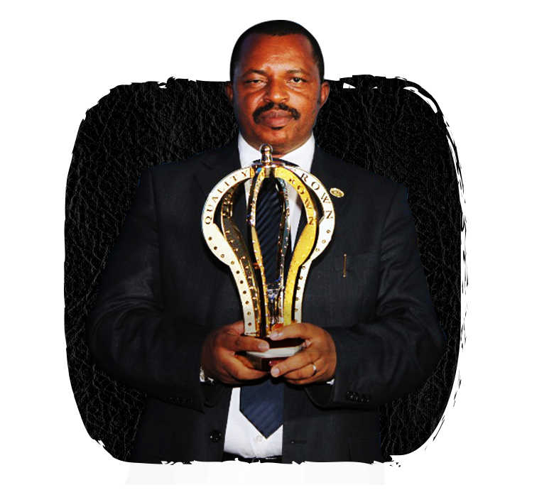

|  |
Byose ni kuri Nyirangarama
About usSina Gerard/Ese URWIBUTSO is an international owned and managed by Mr. Sina Gerard. It is oriented towards agro-processing industries in sector. The company is located at Nyirangarama in Rulindo district, Nothern province about 45km from Kigali City, on Kigali-Musanze-Rubavu main road. Our missionProccessing and delivering standardized products and provide high quality services. Our visionBeing influential through providing excelllent Made-in-Rwanda products; Being competitive worldwide and enhance social economic development. Our core valuesGod above all; Integrity within our commitment; Innovation; Innovation; Bring to perfection our work; Reliability. |